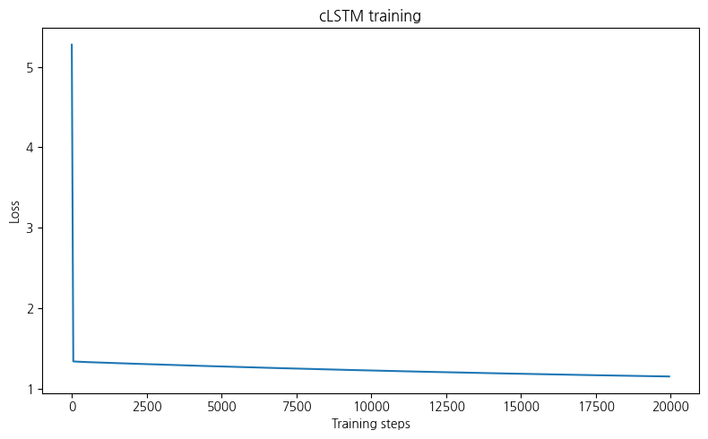
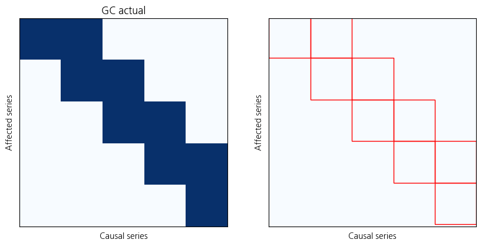

import torch
import numpy as np
import matplotlib.pyplot as plt
from synthetic import simulate_lorenz_96
from models.crnn import cRNN, train_model_istaimport pandas as pd# For GPU acceleration
device = torch.device('cuda')# Simulate data
#X_np, GC = simulate_lorenz_96(p=10, F=10, T=1000)
#X = torch.tensor(X_np[np.newaxis], dtype=torch.float32, device=device)wt = pd.read_csv("weather2024.csv")wt| 일시 | 기온 | 강수량 | 풍속 | 습도 | 일사 | |
|---|---|---|---|---|---|---|
| 0 | 2024-01-01 01:00 | 3.8 | 0.0 | 1.5 | 80 | 0.0 |
| 1 | 2024-01-01 02:00 | 3.9 | 0.0 | 0.2 | 79 | 0.0 |
| 2 | 2024-01-01 03:00 | 3.5 | 0.0 | 0.4 | 84 | 0.0 |
| 3 | 2024-01-01 04:00 | 1.9 | 0.0 | 1.1 | 92 | 0.0 |
| 4 | 2024-01-01 05:00 | 1.4 | 0.0 | 1.5 | 94 | 0.0 |
| ... | ... | ... | ... | ... | ... | ... |
| 8755 | 2024-12-30 20:00 | 7.6 | 0.0 | 1.4 | 71 | 0.0 |
| 8756 | 2024-12-30 21:00 | 7.5 | 0.0 | 1.7 | 69 | 0.0 |
| 8757 | 2024-12-30 22:00 | 7.2 | 0.0 | 1.2 | 70 | 0.0 |
| 8758 | 2024-12-30 23:00 | 7.2 | 0.0 | 1.7 | 71 | 0.0 |
| 8759 | 2024-12-31 00:00 | 7.4 | 0.0 | 2.8 | 70 | 0.0 |
8760 rows × 6 columns
from sklearn.preprocessing import StandardScaler
X_np = wt.iloc[:, 1:].values
scaler = StandardScaler()
X_scaled = scaler.fit_transform(X_np)
X_np = X_scaled.astype(np.float32)
X = torch.tensor(X_np[np.newaxis], dtype=torch.float32, device=device)# Set up model
crnn = cRNN(X.shape[-1], hidden=100).cuda(device=device)# Train with ISTA
train_loss_list = train_model_ista(
crnn, X, context=10, lam=10.0, lam_ridge=1e-2, lr=1e-3, max_iter=20000,
check_every=50)----------Iter = 50----------
Loss = 5.275791
Variable usage = 100.00%
----------Iter = 100----------
Loss = 1.339803
Variable usage = 0.00%
----------Iter = 150----------
Loss = 1.338235
Variable usage = 0.00%
----------Iter = 200----------
Loss = 1.336950
Variable usage = 0.00%
----------Iter = 250----------
Loss = 1.335857
Variable usage = 0.00%
----------Iter = 300----------
Loss = 1.334898
Variable usage = 0.00%
----------Iter = 350----------
Loss = 1.334030
Variable usage = 0.00%
----------Iter = 400----------
Loss = 1.333226
Variable usage = 0.00%
----------Iter = 450----------
Loss = 1.332466
Variable usage = 0.00%
----------Iter = 500----------
Loss = 1.331737
Variable usage = 0.00%
----------Iter = 550----------
Loss = 1.331030
Variable usage = 0.00%
----------Iter = 600----------
Loss = 1.330338
Variable usage = 0.00%
----------Iter = 650----------
Loss = 1.329658
Variable usage = 0.00%
----------Iter = 700----------
Loss = 1.328985
Variable usage = 0.00%
----------Iter = 750----------
Loss = 1.328318
Variable usage = 0.00%
----------Iter = 800----------
Loss = 1.327656
Variable usage = 0.00%
----------Iter = 850----------
Loss = 1.326997
Variable usage = 0.00%
----------Iter = 900----------
Loss = 1.326342
Variable usage = 0.00%
----------Iter = 950----------
Loss = 1.325688
Variable usage = 0.00%
----------Iter = 1000----------
Loss = 1.325037
Variable usage = 0.00%
----------Iter = 1050----------
Loss = 1.324387
Variable usage = 0.00%
----------Iter = 1100----------
Loss = 1.323739
Variable usage = 0.00%
----------Iter = 1150----------
Loss = 1.323092
Variable usage = 0.00%
----------Iter = 1200----------
Loss = 1.322447
Variable usage = 0.00%
----------Iter = 1250----------
Loss = 1.321804
Variable usage = 0.00%
----------Iter = 1300----------
Loss = 1.321161
Variable usage = 0.00%
----------Iter = 1350----------
Loss = 1.320521
Variable usage = 0.00%
----------Iter = 1400----------
Loss = 1.319881
Variable usage = 0.00%
----------Iter = 1450----------
Loss = 1.319243
Variable usage = 0.00%
----------Iter = 1500----------
Loss = 1.318606
Variable usage = 0.00%
----------Iter = 1550----------
Loss = 1.317970
Variable usage = 0.00%
----------Iter = 1600----------
Loss = 1.317335
Variable usage = 0.00%
----------Iter = 1650----------
Loss = 1.316702
Variable usage = 0.00%
----------Iter = 1700----------
Loss = 1.316070
Variable usage = 0.00%
----------Iter = 1750----------
Loss = 1.315440
Variable usage = 0.00%
----------Iter = 1800----------
Loss = 1.314810
Variable usage = 0.00%
----------Iter = 1850----------
Loss = 1.314182
Variable usage = 0.00%
----------Iter = 1900----------
Loss = 1.313555
Variable usage = 0.00%
----------Iter = 1950----------
Loss = 1.312930
Variable usage = 0.00%
----------Iter = 2000----------
Loss = 1.312305
Variable usage = 0.00%
----------Iter = 2050----------
Loss = 1.311682
Variable usage = 0.00%
----------Iter = 2100----------
Loss = 1.311061
Variable usage = 0.00%
----------Iter = 2150----------
Loss = 1.310440
Variable usage = 0.00%
----------Iter = 2200----------
Loss = 1.309821
Variable usage = 0.00%
----------Iter = 2250----------
Loss = 1.309202
Variable usage = 0.00%
----------Iter = 2300----------
Loss = 1.308585
Variable usage = 0.00%
----------Iter = 2350----------
Loss = 1.307970
Variable usage = 0.00%
----------Iter = 2400----------
Loss = 1.307355
Variable usage = 0.00%
----------Iter = 2450----------
Loss = 1.306742
Variable usage = 0.00%
----------Iter = 2500----------
Loss = 1.306130
Variable usage = 0.00%
----------Iter = 2550----------
Loss = 1.305519
Variable usage = 0.00%
----------Iter = 2600----------
Loss = 1.304910
Variable usage = 0.00%
----------Iter = 2650----------
Loss = 1.304302
Variable usage = 0.00%
----------Iter = 2700----------
Loss = 1.303695
Variable usage = 0.00%
----------Iter = 2750----------
Loss = 1.303089
Variable usage = 0.00%
----------Iter = 2800----------
Loss = 1.302484
Variable usage = 0.00%
----------Iter = 2850----------
Loss = 1.301881
Variable usage = 0.00%
----------Iter = 2900----------
Loss = 1.301278
Variable usage = 0.00%
----------Iter = 2950----------
Loss = 1.300677
Variable usage = 0.00%
----------Iter = 3000----------
Loss = 1.300077
Variable usage = 0.00%
----------Iter = 3050----------
Loss = 1.299479
Variable usage = 0.00%
----------Iter = 3100----------
Loss = 1.298881
Variable usage = 0.00%
----------Iter = 3150----------
Loss = 1.298285
Variable usage = 0.00%
----------Iter = 3200----------
Loss = 1.297690
Variable usage = 0.00%
----------Iter = 3250----------
Loss = 1.297096
Variable usage = 0.00%
----------Iter = 3300----------
Loss = 1.296504
Variable usage = 0.00%
----------Iter = 3350----------
Loss = 1.295912
Variable usage = 0.00%
----------Iter = 3400----------
Loss = 1.295322
Variable usage = 0.00%
----------Iter = 3450----------
Loss = 1.294733
Variable usage = 0.00%
----------Iter = 3500----------
Loss = 1.294145
Variable usage = 0.00%
----------Iter = 3550----------
Loss = 1.293558
Variable usage = 0.00%
----------Iter = 3600----------
Loss = 1.292972
Variable usage = 0.00%
----------Iter = 3650----------
Loss = 1.292388
Variable usage = 0.00%
----------Iter = 3700----------
Loss = 1.291805
Variable usage = 0.00%
----------Iter = 3750----------
Loss = 1.291223
Variable usage = 0.00%
----------Iter = 3800----------
Loss = 1.290642
Variable usage = 0.00%
----------Iter = 3850----------
Loss = 1.290062
Variable usage = 0.00%
----------Iter = 3900----------
Loss = 1.289483
Variable usage = 0.00%
----------Iter = 3950----------
Loss = 1.288906
Variable usage = 0.00%
----------Iter = 4000----------
Loss = 1.288329
Variable usage = 0.00%
----------Iter = 4050----------
Loss = 1.287754
Variable usage = 0.00%
----------Iter = 4100----------
Loss = 1.287180
Variable usage = 0.00%
----------Iter = 4150----------
Loss = 1.286608
Variable usage = 0.00%
----------Iter = 4200----------
Loss = 1.286036
Variable usage = 0.00%
----------Iter = 4250----------
Loss = 1.285465
Variable usage = 0.00%
----------Iter = 4300----------
Loss = 1.284896
Variable usage = 0.00%
----------Iter = 4350----------
Loss = 1.284328
Variable usage = 0.00%
----------Iter = 4400----------
Loss = 1.283761
Variable usage = 0.00%
----------Iter = 4450----------
Loss = 1.283194
Variable usage = 0.00%
----------Iter = 4500----------
Loss = 1.282630
Variable usage = 0.00%
----------Iter = 4550----------
Loss = 1.282066
Variable usage = 0.00%
----------Iter = 4600----------
Loss = 1.281503
Variable usage = 0.00%
----------Iter = 4650----------
Loss = 1.280942
Variable usage = 0.00%
----------Iter = 4700----------
Loss = 1.280381
Variable usage = 0.00%
----------Iter = 4750----------
Loss = 1.279822
Variable usage = 0.00%
----------Iter = 4800----------
Loss = 1.279264
Variable usage = 0.00%
----------Iter = 4850----------
Loss = 1.278707
Variable usage = 0.00%
----------Iter = 4900----------
Loss = 1.278151
Variable usage = 0.00%
----------Iter = 4950----------
Loss = 1.277596
Variable usage = 0.00%
----------Iter = 5000----------
Loss = 1.277043
Variable usage = 0.00%
----------Iter = 5050----------
Loss = 1.276490
Variable usage = 0.00%
----------Iter = 5100----------
Loss = 1.275938
Variable usage = 0.00%
----------Iter = 5150----------
Loss = 1.275388
Variable usage = 0.00%
----------Iter = 5200----------
Loss = 1.274839
Variable usage = 0.00%
----------Iter = 5250----------
Loss = 1.274291
Variable usage = 0.00%
----------Iter = 5300----------
Loss = 1.273744
Variable usage = 0.00%
----------Iter = 5350----------
Loss = 1.273198
Variable usage = 0.00%
----------Iter = 5400----------
Loss = 1.272653
Variable usage = 0.00%
----------Iter = 5450----------
Loss = 1.272109
Variable usage = 0.00%
----------Iter = 5500----------
Loss = 1.271566
Variable usage = 0.00%
----------Iter = 5550----------
Loss = 1.271025
Variable usage = 0.00%
----------Iter = 5600----------
Loss = 1.270484
Variable usage = 0.00%
----------Iter = 5650----------
Loss = 1.269945
Variable usage = 0.00%
----------Iter = 5700----------
Loss = 1.269406
Variable usage = 0.00%
----------Iter = 5750----------
Loss = 1.268869
Variable usage = 0.00%
----------Iter = 5800----------
Loss = 1.268332
Variable usage = 0.00%
----------Iter = 5850----------
Loss = 1.267797
Variable usage = 0.00%
----------Iter = 5900----------
Loss = 1.267263
Variable usage = 0.00%
----------Iter = 5950----------
Loss = 1.266730
Variable usage = 0.00%
----------Iter = 6000----------
Loss = 1.266199
Variable usage = 0.00%
----------Iter = 6050----------
Loss = 1.265668
Variable usage = 0.00%
----------Iter = 6100----------
Loss = 1.265138
Variable usage = 0.00%
----------Iter = 6150----------
Loss = 1.264609
Variable usage = 0.00%
----------Iter = 6200----------
Loss = 1.264081
Variable usage = 0.00%
----------Iter = 6250----------
Loss = 1.263555
Variable usage = 0.00%
----------Iter = 6300----------
Loss = 1.263029
Variable usage = 0.00%
----------Iter = 6350----------
Loss = 1.262504
Variable usage = 0.00%
----------Iter = 6400----------
Loss = 1.261981
Variable usage = 0.00%
----------Iter = 6450----------
Loss = 1.261458
Variable usage = 0.00%
----------Iter = 6500----------
Loss = 1.260937
Variable usage = 0.00%
----------Iter = 6550----------
Loss = 1.260416
Variable usage = 0.00%
----------Iter = 6600----------
Loss = 1.259897
Variable usage = 0.00%
----------Iter = 6650----------
Loss = 1.259379
Variable usage = 0.00%
----------Iter = 6700----------
Loss = 1.258862
Variable usage = 0.00%
----------Iter = 6750----------
Loss = 1.258345
Variable usage = 0.00%
----------Iter = 6800----------
Loss = 1.257830
Variable usage = 0.00%
----------Iter = 6850----------
Loss = 1.257316
Variable usage = 0.00%
----------Iter = 6900----------
Loss = 1.256803
Variable usage = 0.00%
----------Iter = 6950----------
Loss = 1.256291
Variable usage = 0.00%
----------Iter = 7000----------
Loss = 1.255780
Variable usage = 0.00%
----------Iter = 7050----------
Loss = 1.255270
Variable usage = 0.00%
----------Iter = 7100----------
Loss = 1.254761
Variable usage = 0.00%
----------Iter = 7150----------
Loss = 1.254253
Variable usage = 0.00%
----------Iter = 7200----------
Loss = 1.253746
Variable usage = 0.00%
----------Iter = 7250----------
Loss = 1.253240
Variable usage = 0.00%
----------Iter = 7300----------
Loss = 1.252735
Variable usage = 0.00%
----------Iter = 7350----------
Loss = 1.252231
Variable usage = 0.00%
----------Iter = 7400----------
Loss = 1.251728
Variable usage = 0.00%
----------Iter = 7450----------
Loss = 1.251226
Variable usage = 0.00%
----------Iter = 7500----------
Loss = 1.250725
Variable usage = 0.00%
----------Iter = 7550----------
Loss = 1.250225
Variable usage = 0.00%
----------Iter = 7600----------
Loss = 1.249726
Variable usage = 0.00%
----------Iter = 7650----------
Loss = 1.249228
Variable usage = 0.00%
----------Iter = 7700----------
Loss = 1.248731
Variable usage = 0.00%
----------Iter = 7750----------
Loss = 1.248235
Variable usage = 0.00%
----------Iter = 7800----------
Loss = 1.247740
Variable usage = 0.00%
----------Iter = 7850----------
Loss = 1.247246
Variable usage = 0.00%
----------Iter = 7900----------
Loss = 1.246753
Variable usage = 0.00%
----------Iter = 7950----------
Loss = 1.246261
Variable usage = 0.00%
----------Iter = 8000----------
Loss = 1.245770
Variable usage = 0.00%
----------Iter = 8050----------
Loss = 1.245280
Variable usage = 0.00%
----------Iter = 8100----------
Loss = 1.244790
Variable usage = 0.00%
----------Iter = 8150----------
Loss = 1.244302
Variable usage = 0.00%
----------Iter = 8200----------
Loss = 1.243815
Variable usage = 0.00%
----------Iter = 8250----------
Loss = 1.243329
Variable usage = 0.00%
----------Iter = 8300----------
Loss = 1.242844
Variable usage = 0.00%
----------Iter = 8350----------
Loss = 1.242360
Variable usage = 0.00%
----------Iter = 8400----------
Loss = 1.241876
Variable usage = 0.00%
----------Iter = 8450----------
Loss = 1.241394
Variable usage = 0.00%
----------Iter = 8500----------
Loss = 1.240913
Variable usage = 0.00%
----------Iter = 8550----------
Loss = 1.240433
Variable usage = 0.00%
----------Iter = 8600----------
Loss = 1.239953
Variable usage = 0.00%
----------Iter = 8650----------
Loss = 1.239475
Variable usage = 0.00%
----------Iter = 8700----------
Loss = 1.238997
Variable usage = 0.00%
----------Iter = 8750----------
Loss = 1.238521
Variable usage = 0.00%
----------Iter = 8800----------
Loss = 1.238045
Variable usage = 0.00%
----------Iter = 8850----------
Loss = 1.237571
Variable usage = 0.00%
----------Iter = 8900----------
Loss = 1.237097
Variable usage = 0.00%
----------Iter = 8950----------
Loss = 1.236624
Variable usage = 0.00%
----------Iter = 9000----------
Loss = 1.236152
Variable usage = 0.00%
----------Iter = 9050----------
Loss = 1.235682
Variable usage = 0.00%
----------Iter = 9100----------
Loss = 1.235212
Variable usage = 0.00%
----------Iter = 9150----------
Loss = 1.234743
Variable usage = 0.00%
----------Iter = 9200----------
Loss = 1.234275
Variable usage = 0.00%
----------Iter = 9250----------
Loss = 1.233808
Variable usage = 0.00%
----------Iter = 9300----------
Loss = 1.233341
Variable usage = 0.00%
----------Iter = 9350----------
Loss = 1.232876
Variable usage = 0.00%
----------Iter = 9400----------
Loss = 1.232412
Variable usage = 0.00%
----------Iter = 9450----------
Loss = 1.231948
Variable usage = 0.00%
----------Iter = 9500----------
Loss = 1.231486
Variable usage = 0.00%
----------Iter = 9550----------
Loss = 1.231025
Variable usage = 0.00%
----------Iter = 9600----------
Loss = 1.230564
Variable usage = 0.00%
----------Iter = 9650----------
Loss = 1.230104
Variable usage = 0.00%
----------Iter = 9700----------
Loss = 1.229646
Variable usage = 0.00%
----------Iter = 9750----------
Loss = 1.229188
Variable usage = 0.00%
----------Iter = 9800----------
Loss = 1.228731
Variable usage = 0.00%
----------Iter = 9850----------
Loss = 1.228275
Variable usage = 0.00%
----------Iter = 9900----------
Loss = 1.227820
Variable usage = 0.00%
----------Iter = 9950----------
Loss = 1.227366
Variable usage = 0.00%
----------Iter = 10000----------
Loss = 1.226912
Variable usage = 0.00%
----------Iter = 10050----------
Loss = 1.226460
Variable usage = 0.00%
----------Iter = 10100----------
Loss = 1.226008
Variable usage = 0.00%
----------Iter = 10150----------
Loss = 1.225558
Variable usage = 0.00%
----------Iter = 10200----------
Loss = 1.225108
Variable usage = 0.00%
----------Iter = 10250----------
Loss = 1.224659
Variable usage = 0.00%
----------Iter = 10300----------
Loss = 1.224212
Variable usage = 0.00%
----------Iter = 10350----------
Loss = 1.223765
Variable usage = 0.00%
----------Iter = 10400----------
Loss = 1.223318
Variable usage = 0.00%
----------Iter = 10450----------
Loss = 1.222873
Variable usage = 0.00%
----------Iter = 10500----------
Loss = 1.222429
Variable usage = 0.00%
----------Iter = 10550----------
Loss = 1.221986
Variable usage = 0.00%
----------Iter = 10600----------
Loss = 1.221543
Variable usage = 0.00%
----------Iter = 10650----------
Loss = 1.221102
Variable usage = 0.00%
----------Iter = 10700----------
Loss = 1.220661
Variable usage = 0.00%
----------Iter = 10750----------
Loss = 1.220221
Variable usage = 0.00%
----------Iter = 10800----------
Loss = 1.219782
Variable usage = 0.00%
----------Iter = 10850----------
Loss = 1.219344
Variable usage = 0.00%
----------Iter = 10900----------
Loss = 1.218906
Variable usage = 0.00%
----------Iter = 10950----------
Loss = 1.218470
Variable usage = 0.00%
----------Iter = 11000----------
Loss = 1.218035
Variable usage = 0.00%
----------Iter = 11050----------
Loss = 1.217600
Variable usage = 0.00%
----------Iter = 11100----------
Loss = 1.217166
Variable usage = 0.00%
----------Iter = 11150----------
Loss = 1.216733
Variable usage = 0.00%
----------Iter = 11200----------
Loss = 1.216301
Variable usage = 0.00%
----------Iter = 11250----------
Loss = 1.215870
Variable usage = 0.00%
----------Iter = 11300----------
Loss = 1.215440
Variable usage = 0.00%
----------Iter = 11350----------
Loss = 1.215011
Variable usage = 0.00%
----------Iter = 11400----------
Loss = 1.214582
Variable usage = 0.00%
----------Iter = 11450----------
Loss = 1.214154
Variable usage = 0.00%
----------Iter = 11500----------
Loss = 1.213727
Variable usage = 0.00%
----------Iter = 11550----------
Loss = 1.213301
Variable usage = 0.00%
----------Iter = 11600----------
Loss = 1.212876
Variable usage = 0.00%
----------Iter = 11650----------
Loss = 1.212452
Variable usage = 0.00%
----------Iter = 11700----------
Loss = 1.212028
Variable usage = 0.00%
----------Iter = 11750----------
Loss = 1.211606
Variable usage = 0.00%
----------Iter = 11800----------
Loss = 1.211184
Variable usage = 0.00%
----------Iter = 11850----------
Loss = 1.210763
Variable usage = 0.00%
----------Iter = 11900----------
Loss = 1.210343
Variable usage = 0.00%
----------Iter = 11950----------
Loss = 1.209924
Variable usage = 0.00%
----------Iter = 12000----------
Loss = 1.209505
Variable usage = 0.00%
----------Iter = 12050----------
Loss = 1.209087
Variable usage = 0.00%
----------Iter = 12100----------
Loss = 1.208671
Variable usage = 0.00%
----------Iter = 12150----------
Loss = 1.208255
Variable usage = 0.00%
----------Iter = 12200----------
Loss = 1.207840
Variable usage = 0.00%
----------Iter = 12250----------
Loss = 1.207425
Variable usage = 0.00%
----------Iter = 12300----------
Loss = 1.207012
Variable usage = 0.00%
----------Iter = 12350----------
Loss = 1.206599
Variable usage = 0.00%
----------Iter = 12400----------
Loss = 1.206188
Variable usage = 0.00%
----------Iter = 12450----------
Loss = 1.205777
Variable usage = 0.00%
----------Iter = 12500----------
Loss = 1.205367
Variable usage = 0.00%
----------Iter = 12550----------
Loss = 1.204957
Variable usage = 0.00%
----------Iter = 12600----------
Loss = 1.204549
Variable usage = 0.00%
----------Iter = 12650----------
Loss = 1.204141
Variable usage = 0.00%
----------Iter = 12700----------
Loss = 1.203734
Variable usage = 0.00%
----------Iter = 12750----------
Loss = 1.203328
Variable usage = 0.00%
----------Iter = 12800----------
Loss = 1.202923
Variable usage = 0.00%
----------Iter = 12850----------
Loss = 1.202518
Variable usage = 0.00%
----------Iter = 12900----------
Loss = 1.202115
Variable usage = 0.00%
----------Iter = 12950----------
Loss = 1.201712
Variable usage = 0.00%
----------Iter = 13000----------
Loss = 1.201310
Variable usage = 0.00%
----------Iter = 13050----------
Loss = 1.200909
Variable usage = 0.00%
----------Iter = 13100----------
Loss = 1.200508
Variable usage = 0.00%
----------Iter = 13150----------
Loss = 1.200109
Variable usage = 0.00%
----------Iter = 13200----------
Loss = 1.199710
Variable usage = 0.00%
----------Iter = 13250----------
Loss = 1.199312
Variable usage = 0.00%
----------Iter = 13300----------
Loss = 1.198915
Variable usage = 0.00%
----------Iter = 13350----------
Loss = 1.198518
Variable usage = 0.00%
----------Iter = 13400----------
Loss = 1.198123
Variable usage = 0.00%
----------Iter = 13450----------
Loss = 1.197728
Variable usage = 0.00%
----------Iter = 13500----------
Loss = 1.197334
Variable usage = 0.00%
----------Iter = 13550----------
Loss = 1.196941
Variable usage = 0.00%
----------Iter = 13600----------
Loss = 1.196548
Variable usage = 0.00%
----------Iter = 13650----------
Loss = 1.196156
Variable usage = 0.00%
----------Iter = 13700----------
Loss = 1.195765
Variable usage = 0.00%
----------Iter = 13750----------
Loss = 1.195375
Variable usage = 0.00%
----------Iter = 13800----------
Loss = 1.194986
Variable usage = 0.00%
----------Iter = 13850----------
Loss = 1.194597
Variable usage = 0.00%
----------Iter = 13900----------
Loss = 1.194210
Variable usage = 0.00%
----------Iter = 13950----------
Loss = 1.193823
Variable usage = 0.00%
----------Iter = 14000----------
Loss = 1.193436
Variable usage = 0.00%
----------Iter = 14050----------
Loss = 1.193051
Variable usage = 0.00%
----------Iter = 14100----------
Loss = 1.192666
Variable usage = 0.00%
----------Iter = 14150----------
Loss = 1.192282
Variable usage = 0.00%
----------Iter = 14200----------
Loss = 1.191899
Variable usage = 0.00%
----------Iter = 14250----------
Loss = 1.191517
Variable usage = 0.00%
----------Iter = 14300----------
Loss = 1.191135
Variable usage = 0.00%
----------Iter = 14350----------
Loss = 1.190754
Variable usage = 0.00%
----------Iter = 14400----------
Loss = 1.190374
Variable usage = 0.00%
----------Iter = 14450----------
Loss = 1.189995
Variable usage = 0.00%
----------Iter = 14500----------
Loss = 1.189616
Variable usage = 0.00%
----------Iter = 14550----------
Loss = 1.189238
Variable usage = 0.00%
----------Iter = 14600----------
Loss = 1.188861
Variable usage = 0.00%
----------Iter = 14650----------
Loss = 1.188485
Variable usage = 0.00%
----------Iter = 14700----------
Loss = 1.188109
Variable usage = 0.00%
----------Iter = 14750----------
Loss = 1.187734
Variable usage = 0.00%
----------Iter = 14800----------
Loss = 1.187360
Variable usage = 0.00%
----------Iter = 14850----------
Loss = 1.186987
Variable usage = 0.00%
----------Iter = 14900----------
Loss = 1.186615
Variable usage = 0.00%
----------Iter = 14950----------
Loss = 1.186243
Variable usage = 0.00%
----------Iter = 15000----------
Loss = 1.185872
Variable usage = 0.00%
----------Iter = 15050----------
Loss = 1.185501
Variable usage = 0.00%
----------Iter = 15100----------
Loss = 1.185132
Variable usage = 0.00%
----------Iter = 15150----------
Loss = 1.184763
Variable usage = 0.00%
----------Iter = 15200----------
Loss = 1.184395
Variable usage = 0.00%
----------Iter = 15250----------
Loss = 1.184027
Variable usage = 0.00%
----------Iter = 15300----------
Loss = 1.183661
Variable usage = 0.00%
----------Iter = 15350----------
Loss = 1.183295
Variable usage = 0.00%
----------Iter = 15400----------
Loss = 1.182929
Variable usage = 0.00%
----------Iter = 15450----------
Loss = 1.182565
Variable usage = 0.00%
----------Iter = 15500----------
Loss = 1.182201
Variable usage = 0.00%
----------Iter = 15550----------
Loss = 1.181838
Variable usage = 0.00%
----------Iter = 15600----------
Loss = 1.181476
Variable usage = 0.00%
----------Iter = 15650----------
Loss = 1.181114
Variable usage = 0.00%
----------Iter = 15700----------
Loss = 1.180754
Variable usage = 0.00%
----------Iter = 15750----------
Loss = 1.180393
Variable usage = 0.00%
----------Iter = 15800----------
Loss = 1.180034
Variable usage = 0.00%
----------Iter = 15850----------
Loss = 1.179675
Variable usage = 0.00%
----------Iter = 15900----------
Loss = 1.179317
Variable usage = 0.00%
----------Iter = 15950----------
Loss = 1.178960
Variable usage = 0.00%
----------Iter = 16000----------
Loss = 1.178604
Variable usage = 0.00%
----------Iter = 16050----------
Loss = 1.178248
Variable usage = 0.00%
----------Iter = 16100----------
Loss = 1.177893
Variable usage = 0.00%
----------Iter = 16150----------
Loss = 1.177538
Variable usage = 0.00%
----------Iter = 16200----------
Loss = 1.177184
Variable usage = 0.00%
----------Iter = 16250----------
Loss = 1.176831
Variable usage = 0.00%
----------Iter = 16300----------
Loss = 1.176479
Variable usage = 0.00%
----------Iter = 16350----------
Loss = 1.176128
Variable usage = 0.00%
----------Iter = 16400----------
Loss = 1.175777
Variable usage = 0.00%
----------Iter = 16450----------
Loss = 1.175426
Variable usage = 0.00%
----------Iter = 16500----------
Loss = 1.175077
Variable usage = 0.00%
----------Iter = 16550----------
Loss = 1.174728
Variable usage = 0.00%
----------Iter = 16600----------
Loss = 1.174380
Variable usage = 0.00%
----------Iter = 16650----------
Loss = 1.174033
Variable usage = 0.00%
----------Iter = 16700----------
Loss = 1.173686
Variable usage = 0.00%
----------Iter = 16750----------
Loss = 1.173340
Variable usage = 0.00%
----------Iter = 16800----------
Loss = 1.172995
Variable usage = 0.00%
----------Iter = 16850----------
Loss = 1.172650
Variable usage = 0.00%
----------Iter = 16900----------
Loss = 1.172306
Variable usage = 0.00%
----------Iter = 16950----------
Loss = 1.171963
Variable usage = 0.00%
----------Iter = 17000----------
Loss = 1.171620
Variable usage = 0.00%
----------Iter = 17050----------
Loss = 1.171278
Variable usage = 0.00%
----------Iter = 17100----------
Loss = 1.170937
Variable usage = 0.00%
----------Iter = 17150----------
Loss = 1.170597
Variable usage = 0.00%
----------Iter = 17200----------
Loss = 1.170257
Variable usage = 0.00%
----------Iter = 17250----------
Loss = 1.169918
Variable usage = 0.00%
----------Iter = 17300----------
Loss = 1.169579
Variable usage = 0.00%
----------Iter = 17350----------
Loss = 1.169242
Variable usage = 0.00%
----------Iter = 17400----------
Loss = 1.168904
Variable usage = 0.00%
----------Iter = 17450----------
Loss = 1.168568
Variable usage = 0.00%
----------Iter = 17500----------
Loss = 1.168232
Variable usage = 0.00%
----------Iter = 17550----------
Loss = 1.167897
Variable usage = 0.00%
----------Iter = 17600----------
Loss = 1.167563
Variable usage = 0.00%
----------Iter = 17650----------
Loss = 1.167229
Variable usage = 0.00%
----------Iter = 17700----------
Loss = 1.166896
Variable usage = 0.00%
----------Iter = 17750----------
Loss = 1.166563
Variable usage = 0.00%
----------Iter = 17800----------
Loss = 1.166232
Variable usage = 0.00%
----------Iter = 17850----------
Loss = 1.165900
Variable usage = 0.00%
----------Iter = 17900----------
Loss = 1.165570
Variable usage = 0.00%
----------Iter = 17950----------
Loss = 1.165240
Variable usage = 0.00%
----------Iter = 18000----------
Loss = 1.164911
Variable usage = 0.00%
----------Iter = 18050----------
Loss = 1.164583
Variable usage = 0.00%
----------Iter = 18100----------
Loss = 1.164255
Variable usage = 0.00%
----------Iter = 18150----------
Loss = 1.163928
Variable usage = 0.00%
----------Iter = 18200----------
Loss = 1.163601
Variable usage = 0.00%
----------Iter = 18250----------
Loss = 1.163275
Variable usage = 0.00%
----------Iter = 18300----------
Loss = 1.162950
Variable usage = 0.00%
----------Iter = 18350----------
Loss = 1.162626
Variable usage = 0.00%
----------Iter = 18400----------
Loss = 1.162302
Variable usage = 0.00%
----------Iter = 18450----------
Loss = 1.161978
Variable usage = 0.00%
----------Iter = 18500----------
Loss = 1.161656
Variable usage = 0.00%
----------Iter = 18550----------
Loss = 1.161334
Variable usage = 0.00%
----------Iter = 18600----------
Loss = 1.161013
Variable usage = 0.00%
----------Iter = 18650----------
Loss = 1.160692
Variable usage = 0.00%
----------Iter = 18700----------
Loss = 1.160372
Variable usage = 0.00%
----------Iter = 18750----------
Loss = 1.160052
Variable usage = 0.00%
----------Iter = 18800----------
Loss = 1.159734
Variable usage = 0.00%
----------Iter = 18850----------
Loss = 1.159415
Variable usage = 0.00%
----------Iter = 18900----------
Loss = 1.159098
Variable usage = 0.00%
----------Iter = 18950----------
Loss = 1.158781
Variable usage = 0.00%
----------Iter = 19000----------
Loss = 1.158465
Variable usage = 0.00%
----------Iter = 19050----------
Loss = 1.158149
Variable usage = 0.00%
----------Iter = 19100----------
Loss = 1.157834
Variable usage = 0.00%
----------Iter = 19150----------
Loss = 1.157520
Variable usage = 0.00%
----------Iter = 19200----------
Loss = 1.157206
Variable usage = 0.00%
----------Iter = 19250----------
Loss = 1.156893
Variable usage = 0.00%
----------Iter = 19300----------
Loss = 1.156581
Variable usage = 0.00%
----------Iter = 19350----------
Loss = 1.156269
Variable usage = 0.00%
----------Iter = 19400----------
Loss = 1.155958
Variable usage = 0.00%
----------Iter = 19450----------
Loss = 1.155647
Variable usage = 0.00%
----------Iter = 19500----------
Loss = 1.155337
Variable usage = 0.00%
----------Iter = 19550----------
Loss = 1.155028
Variable usage = 0.00%
----------Iter = 19600----------
Loss = 1.154719
Variable usage = 0.00%
----------Iter = 19650----------
Loss = 1.154411
Variable usage = 0.00%
----------Iter = 19700----------
Loss = 1.154104
Variable usage = 0.00%
----------Iter = 19750----------
Loss = 1.153797
Variable usage = 0.00%
----------Iter = 19800----------
Loss = 1.153490
Variable usage = 0.00%
----------Iter = 19850----------
Loss = 1.153185
Variable usage = 0.00%
----------Iter = 19900----------
Loss = 1.152880
Variable usage = 0.00%
----------Iter = 19950----------
Loss = 1.152575
Variable usage = 0.00%
----------Iter = 20000----------
Loss = 1.152271
Variable usage = 0.00%train_loss_np = np.array([loss.cpu().item() for loss in train_loss_list])# Loss function plot
plt.figure(figsize=(8, 5))
plt.plot(50 * np.arange(len(train_loss_np)), train_loss_np)
plt.title('cLSTM training')
plt.ylabel('Loss')
plt.xlabel('Training steps')
plt.tight_layout()
plt.show()
# 5개의 기상 변수 (기온, 강수량, 풍속, 습도, 일사)에 대한 GC 행렬
GC = np.array([[1, 1, 0, 0, 0], # 기온 -> 강수량
[0, 1, 1, 0, 0], # 강수량 -> 풍속
[0, 0, 1, 1, 0], # 풍속 -> 습도
[0, 0, 0, 1, 1], # 습도 -> 일사
[0, 0, 0, 0, 1]]) # 일사 -> 기온 (self loop)# Check learned Granger causality
GC_est = crnn.GC().cpu().data.numpy()
print('True variable usage = %.2f%%' % (100 * np.mean(GC)))
print('Estimated variable usage = %.2f%%' % (100 * np.mean(GC_est)))
print('Accuracy = %.2f%%' % (100 * np.mean(GC == GC_est)))
# Make figures
fig, axarr = plt.subplots(1, 2, figsize=(10, 5))
axarr[0].imshow(GC, cmap='Blues')
axarr[0].set_title('GC actual')
axarr[0].set_ylabel('Affected series')
axarr[0].set_xlabel('Causal series')
axarr[0].set_xticks([])
axarr[0].set_yticks([])
axarr[1].imshow(GC_est, cmap='Blues', vmin=0, vmax=1, extent=(0, len(GC_est), len(GC_est), 0))
axarr[1].set_ylabel('Affected series')
axarr[1].set_xlabel('Causal series')
axarr[1].set_xticks([])
axarr[1].set_yticks([])
# Mark disagreements
for i in range(len(GC_est)):
for j in range(len(GC_est)):
if GC[i, j] != GC_est[i, j]:
rect = plt.Rectangle((j, i-0.05), 1, 1, facecolor='none', edgecolor='red', linewidth=1)
axarr[1].add_patch(rect)
plt.show()True variable usage = 36.00%
Estimated variable usage = 0.00%
Accuracy = 64.00%